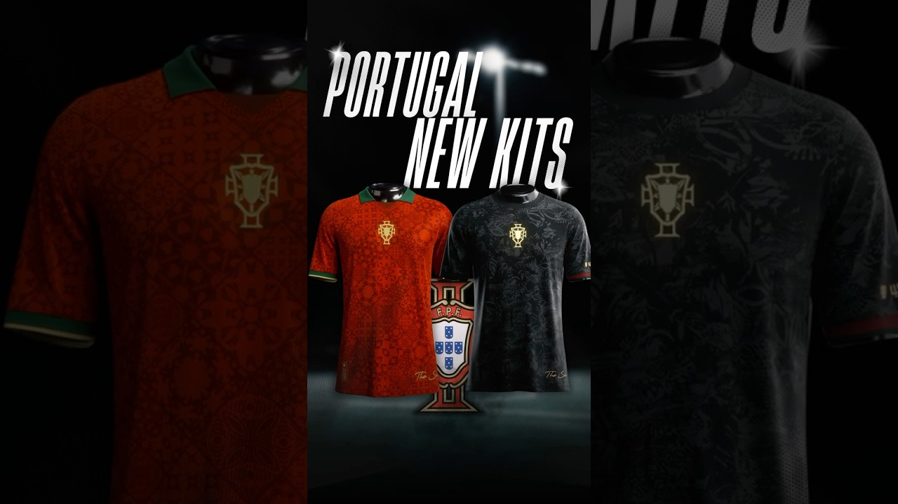

Sports
OFFICIAL CHAMPION LEAGUE BALLS $180 each |
The design draws inspiration from the night sky, featuring stars outlined in gold and painted in blue, along with hand-drawn zodiac signs The Women's Champions League ball draws inspiration from deep space and the northern lights, with hexagons finished in dark purple and neon green |
PORTUGAL KITS $130 each |
The Portugal 2025 Special Kit by Puma was released on November 4, 2025, to commemorate the 60th anniversary of Eusébio's Ballon d'Or victory. This special edition features a sleek matte black finish with subtle national crests embossed throughout the fabric, symbolizing strength and unity. The kit includes gold detailing on the Puma logo and the Portuguese crest, with red and green woven trim highlighting the national colors. It is crafted with Puma’s DryCELL technology for breathability and comfort, making it a perfect choice for collectors and fans of the national team |
Cricket Bat English Willow $150 each |
The DSC Pearla Special Edition English Willow Cricket Bat is a small adult bat designed for players seeking a bat with an extended sweet spot for powerful and dominating hits. It features massive edges and subtle concaving throughout its body, making it feel light in the hand and through the air. The bat's profile is fuller with a hint of concaving for lighter pickup, offering a long sweet spot for all-round shots. The Pearla Range is highly suitable for different levels of players and is known for its exquisite pickup and pronounced bow making it a popular choice among cricket enthusiasts |
Vinicius Jr Football Boots Elite $390 |
Vinícius Júnior’s 2026 Nike Mercurial Vapor 16 signature boots feature a vibrant bright pink "Sunset Pulse" upper with a contrasting blue soleplate, incorporating personal logos and a signature slogan for a distinctive, eye-catching design |
Mizuno Football Boots Elite $380 each |
The Mizuno Alpha II Elite football boots in light blue offer elite-level comfort, speed, and lightweight performance, designed for players seeking agility and precise acceleration |
Nike Phantom Elite $375 |
The Nike Phantom 6 EA Sports FC collection features a vibrant design inspired by intricate pixels, with a rainbow multiknit upper and a pixelated green Swoosh logo. The boots are available in both high-cut (USD 305) and low-cut (USD 280) versions, with a special collector's box included. They are set to be released on September 29, 2025, and are part of the launch campaign for the video game EA Sports FC 26 |
Vapor16 Elite $385 |
The new Nike Mercurial Superfly 10 Mbappé boots feature a striking design with a dominant light orange/peach color, officially called 'Melon Tint.' The sole is light blue ('Igloo'), creating a contrasting color effect and evoking a cool, refreshing feel. The design is accented with a blue ('Neo Turquoise') Swoosh, which is matched by the stud tips and Mbappé's signature "KM" logo on the heel. The insole reads "SANS RISQUES IL N'Y A PAS DE VICTOIRE" (“Without risks, there is no victory.”) as well as DESIGNED TO THE EXACT SPECIFICATIONS OF KYLIAN MBAPPÉ |
Adidas Predetor and F50 Football Boots Elite $375 each |
The Adidas Predator is designed for control, precision, and power, while the F50 is engineered for speed, agility, and a lightweight feel, each tailored to suit different playing styles on the pitch |